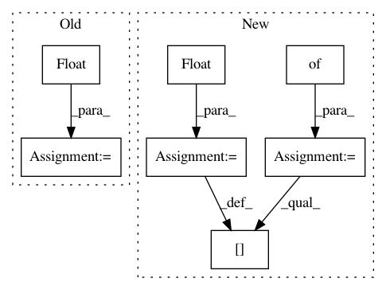

01b4ec3f531e07b8c4a32a13288c963ad8b4b843,server/website/website/db/base/parser.py,BaseParser,convert_dbms_metrics,#BaseParser#Any#Any#Any#,188
Before Change
value = metrics[name]
if metadata.metric_type == MetricType.COUNTER:
converted = self.convert_integer(value, metadata)
metric_data[name] = float(converted) / observation_time
elif metadata.metric_type == MetricType.STATISTICS:
converted = self.convert_integer(value, metadata)
metric_data[name] = float(converted)
else:
raise Exception(
"Unknown metric type for {}: {}".format(name, metadata.metric_type))
if target_objective is not None and self.target_metric(target_objective) not in metric_data:
raise Exception("Cannot find objective function")
if target_objective is not None:
metric_data[target_objective] = metric_data[self.target_metric(target_objective)]
else:
// default
metric_data["throughput_txn_per_sec"] = \
metric_data[self.target_metric(target_objective)]
return metric_data
def extract_valid_variables(self, variables, catalog, default_value=None):
After Change
def convert_dbms_metrics(self, metrics, observation_time, target_objective):
metric_data = {}
// Same as metric_data except COUNTER metrics are not divided by the time
base_metric_data = {}
for name, metadata in self.numeric_metric_catalog_.items():
value = metrics[name]
if metadata.vartype == VarType.INTEGER:
converted = float(self.convert_integer(value, metadata))
elif metadata.vartype == VarType.REAL:
converted = self.convert_real(value, metadata)
else:
raise ValueError(
("Found non-numeric metric "{}" in the numeric "
"metric catalog: value={}, type={}").format(
name, value, VarType.name(metadata.vartype)))
if metadata.metric_type == MetricType.COUNTER:
assert isinstance(converted, float)
base_metric_data[name] = converted
metric_data[name] = converted / observation_time
elif metadata.metric_type == MetricType.STATISTICS:
assert isinstance(converted, float)
base_metric_data[name] = converted
In pattern: SUPERPATTERN
Frequency: 4
Non-data size: 7
Instances
Project Name: cmu-db/ottertune
Commit Name: 01b4ec3f531e07b8c4a32a13288c963ad8b4b843
Time: 2019-10-14
Author: dvanaken@cs.cmu.edu
File Name: server/website/website/db/base/parser.py
Class Name: BaseParser
Method Name: convert_dbms_metrics
Project Name: CellProfiler/CellProfiler
Commit Name: 6c12d3f40ae84d60ab1c74594a2291d684c0295e
Time: 2009-10-05
Author: thouis@1fc53939-2000-0410-845c-e8453a809027
File Name: pyCellProfiler/cellprofiler/modules/imagemath_simple.py
Class Name:
Method Name: add_image
Project Name: cmu-db/ottertune
Commit Name: 01b4ec3f531e07b8c4a32a13288c963ad8b4b843
Time: 2019-10-14
Author: dvanaken@cs.cmu.edu
File Name: server/website/website/db/myrocks/parser.py
Class Name: MyRocksParser
Method Name: convert_dbms_metrics
Project Name: interactiveaudiolab/nussl
Commit Name: 441a175deaa5812c086cdb8a3939d51d39f5a7ae
Time: 2020-01-26
Author: prem@u.northwestern.edu
File Name: nussl/deep/train/trainer.py
Class Name: Trainer
Method Name: setup_loss